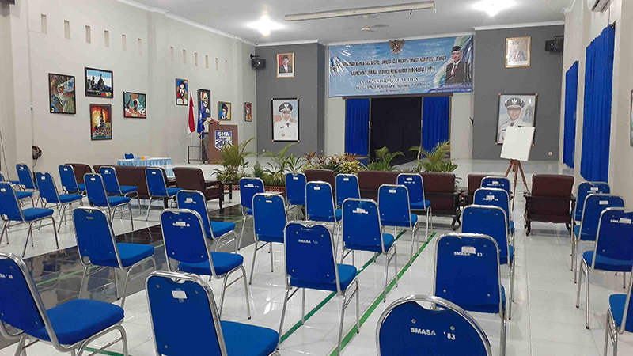
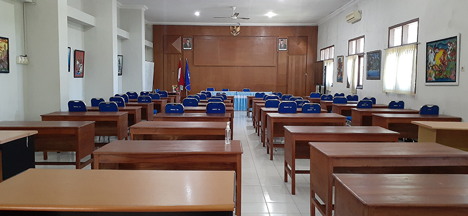
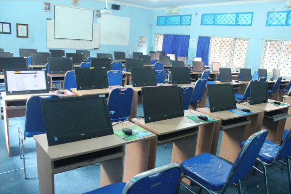
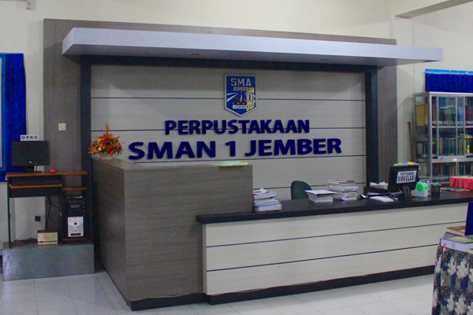
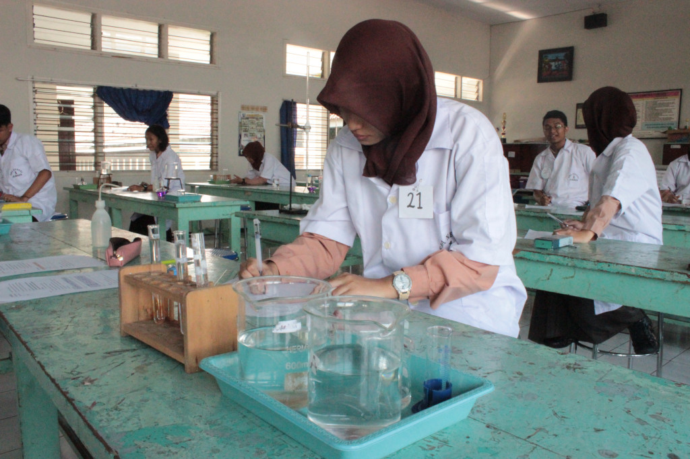
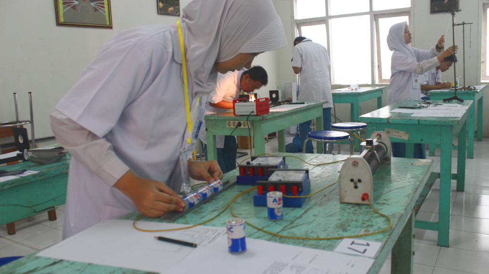
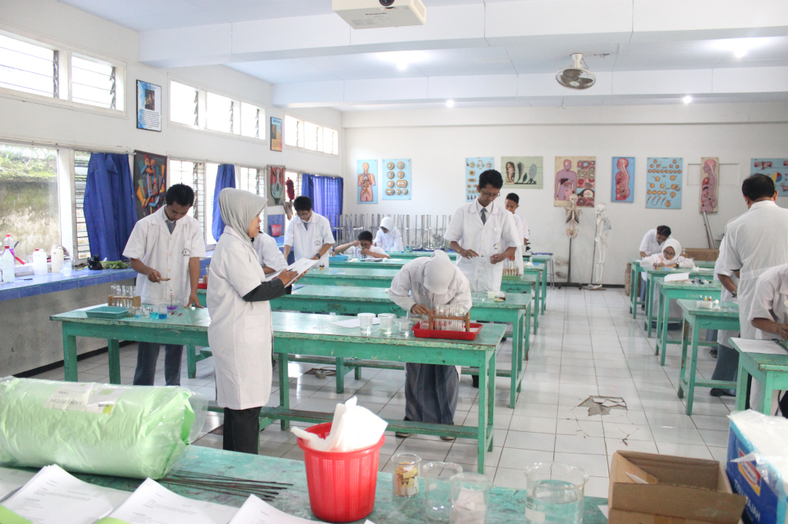
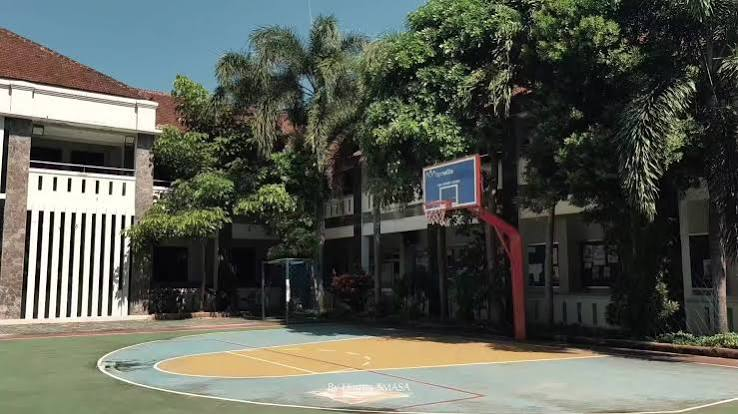
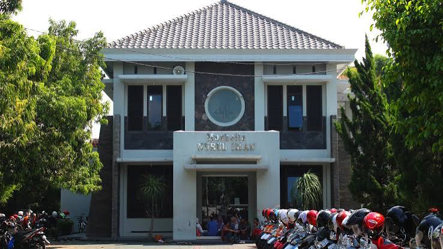

SMA Negeri 1 Jember menyediakan sarana dan prasarana lengkap untuk mendukung kenyamanan serta pengembangan bakat akademis dan non-akademis siswa.


SMA Negeri 1 Jember memiliki 3 ruang aula yang terdiri dari 2 ruang aula kecil dan 1 ruang Aula Besar. Ruang Aula besar berada di atas area parkir SMA Negeri 1 Jember, atau di lantai 2. Aula besar ini memiliki kapasitas 400 kursi. Sebagai bentuk penghormatan kepada Kepala Sekolah periode pertama, maka Aula besar ini diberi nama Aula R.A Djarkasi. Pembangunan aula R.A Djarkasi dimulai saat kepala sekolah periode ke 10 yaitu Bpk. Drs. Bambang Sumpeno, MM. Aula Djarkasi banyak dimanfaatkan untuk kegiatan kegiatan seminar maupun pertemuan. Baik pertemuan dan seminar internal maupun seminar dari pihak luar sekolah. Dua ruang aula berikutnya dengan kapasitas yang lebih kecil diberi nama Aula Madya (memiliki kapasitas 60 kursi) dan Aula Pratama (memiliki kapasitas 30 kursi).

SMA Negeri 1 Jember memiliki tiga ruang laboratorium komputer, masing-masing berkapasitas 40 komputer klien dan 1 server. Lab komputer ini sehari-hari digunakan untuk pelaksanaan Tes Berbasis Computer (CBT/Computer Based Test). Selain itu juga pada hari-hari tertentu digunakan untuk kegiatan sosialisasi atau pelatihan yang membutuhkan fasilitas akses komputer.
Semua lab komputer dibekali akses internet dan akses secara langsung pada fasilitas e-learning sekolah. Untuk mengatur pemakaian lab oleh guru-guru yang memerlukan fasilitas CBT atau lainnya, telah disusun jadwal pemakaian lab yang bisa diakses/dilihat secara online oleh semua warga sekolah terutama guru.

Perpustakaan adalah salah satu sumber belajar yang sangat penting. SMA Negeri 1 Jember memiliki perpustakaan yang dilengkapi buku-buku dalam bentuk cetak maupun digital. Koleksi buku di Perpustakaan SMA Negeri 1 Jember mencapai 26.947, yang terdiri dari Buku Teks, Referensi, Fiksi, maupun Buku Pelajaran Kurikulum 2013.

SMA Negeri 1 Jember memiliki sebuah laboratorium Kimia yang cukup lengkap. Laboratorium ini dibuat dan digunakan sebagai fasilitas untuk praktikum mata pelajaran Kimia dan sejenisnya. Lab Kimia di SMAN 1 Jember merupakan bagian dari Lab MIPA yang dikelola oleh seorang Kepala lab dan seorang Laboran yang berkompeten.
Saat melakukan praktikum di Lab Kimia, siswa diwajibkan memakai pakaian khusus, didampingi guru atau laboran serta mematuhi aturan dan tata tertib Lab. Serta harus melaksanakan praktikum sesuai dengan tata cara yang telah diberikan.

Lab Fisika di SMA Negeri 1 Jember digunakan untuk menunjang kegiatan dalam mata pelajaran sesuai bidangnya yaitu dalam hal ini bidang Fisika. Sama halnya dengan Lab IPA yang lain, kegiatan yang menggunakan lab ini harus menggunakan baju praktek khusus. Setiap Praktek akan didampingi oleh Guru mata pelajaran Fisika dan/atau Laboran yang menangani lab tersebut.

Berbeda dengan 2 Lab IPA yang lain, yang terletak di lantai 2, Laboratorium Biologi di SMA Negeri 1 Jember berada di lantai 1 tepatnya di samping area Lab Komputer. Peralatan di Lab Biologi terbilang cukup lengkap, bahkan untuk mikroskop, lab Biologi SMA Negeri 1 Jember telah dilengkapi dengan mikroskop digital.

Fasilitas outdoor multifungsi yang dapat digunakan untuk olahraga Basket, Futsal, Voli, dan Upacara Bendera rutin.

Sarana ibadah yang bersih dan representative untuk kegiatan sholat berjamaah, ibadah harian, serta pembinaan karakter keagamaan siswa.